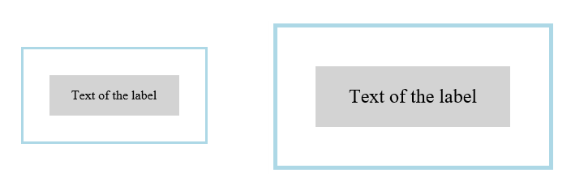

Abstract
CSS Zoom defines a behavior for controling the layout size of an element’s box. CSS Zoom can be defined on any CSS block-level element.
CSS is a language for describing the rendering of structured documents
(such as HTML and XML)
on screen, on paper, in speech, etc.
Status of this document
Table of Contents
1.
Introduction
This section is not normative.
This specification defines features that allows zooming of elements and their
content. Through zoom authors can magnify or reduce the size of rendered
elements. Unlike the transform property, zoom does have an effect over the
layout inside and around the element’s box.
2.
Controling Zoom
An element becomes zoomed when the zoom property has a positive computed value
different than 1. Zoom affects computed property values. The computed value of
zoom is applied as a scalar to all <length> property values resulting
in a magnification or minificaiton effect. Unlike transform scaling the
zoom property affects layout.
Nested values of zoom accumulate resulting in additinal scaling of <length> values.
The zoom property has no effect to <length> property values with computed
value is auto or <percent>.
The computed value of font-size is never <percent> thus zoom always applies.
zoom does not affect or prevent transform scaling.
There is no real reason why <percent> values shouldn’t be affected by zoom, however
this is dictated by current interop behavior. To achieve this the zoom should
<percent> values should be scaled only by the zoom value specified on the the
element itself and not the accumulated value.
2.1.
The zoom property
| Name:
| zoom
|
| Value:
| <number>
|
| Initial:
| 0
|
| Applies to:
| all <length> property values of block-level elements
|
| Inherited:
| no
|
| Percentages:
| Refer to all <length> property values
|
| Media:
| visual
|
| Computed value:
| as specified except for element’s whose float computed value is not none, in which case the computed value is 'auto'.
|
| Animatable:
| no |
The values of this property have the following meanings:
- number
-
Positive floating point number indicating a zoom factor. Numbers smaller
than 1.0 indicate a "zoom out" or minification effect, while numbers
greater than 1.0 indicate a "zoom in" or magnification effect.
- percent
-
Positive floating point number, followed by a percentage character ("%")
which indicates a zoom factor. Percent values smaller than 100% indicate a
"zoom out" or minification effect, while numbers greater than 100%
indicate a "zoom in" or magnification effect.
Negative values for zoom are illegal.
Example of
zoom property applied during hover for magnification effect.
<div class="messageBox">
<div class="label">Text of the label</div>
</div>
<style type="text/css">
.messageBox {
width: 10em;
padding: 2em;
border: medium solid lightblue;
}
.messageBox:hover {
zoom: 150%;
}
.label {
background: lightgrey;
padding: 1em;
text-align: center;
}
</style>
Illustration of the before and after hover state of the message box element.

3.
DOM and CSSOM interaction
The current interoperable behavior of zoom affects DOM and CSSOM interface serialization in two ways; removing or preserving the scaling of the accumulated zoom value.
3.1.
Scaled interface serialization
The following API preseve the accumulated scaling effect of zoom
resulting in serialization of values that are the result of layout.
- offsetTop
- offsetLeft
- clientRects
- scrollTop
- scrollLeft
- boundingClientRect
3.2.
Unscaled interface serialization
The unscaled serialization is performed by applying the inverse accumulated
zoom value to the following OM API. The results of such of serialization
are values approximating the computed values if zoom didn’t apply at all.
- All used values from getComputedStyle properties
- offsetHeight
- offsetWidth
- scrollHeight
- scrollWidth
- clientHeight
- clientWidth
- scrollTop
- scrollLeft
Document conventions
Conformance requirements are expressed with a combination of
descriptive assertions and RFC 2119 terminology. The key words "MUST",
"MUST NOT", "REQUIRED", "SHALL", "SHALL NOT", "SHOULD", "SHOULD NOT",
"RECOMMENDED", "MAY", and "OPTIONAL" in the normative parts of this
document are to be interpreted as described in RFC 2119.
However, for readability, these words do not appear in all uppercase
letters in this specification.
All of the text of this specification is normative except sections
explicitly marked as non-normative, examples, and notes. [RFC2119]
Examples in this specification are introduced with the words "for example"
or are set apart from the normative text with class="example",
like this:
This is an example of an informative example.
Informative notes begin with the word "Note" and are set apart from the
normative text with class="note", like this:
Note, this is an informative note.
Advisements are normative sections styled to evoke special attention and are
set apart from other normative text with <strong class="advisement">, like
this:
UAs MUST provide an accessible alternative.
Conformance to this specification
is defined for three conformance classes:
- style sheet
- A CSS
style sheet.
- renderer
- A UA
that interprets the semantics of a style sheet and renders
documents that use them.
- authoring tool
- A UA
that writes a style sheet.
A style sheet is conformant to this specification
if all of its statements that use syntax defined in this module are valid
according to the generic CSS grammar and the individual grammars of each
feature defined in this module.
A renderer is conformant to this specification
if, in addition to interpreting the style sheet as defined by the
appropriate specifications, it supports all the features defined
by this specification by parsing them correctly
and rendering the document accordingly. However, the inability of a
UA to correctly render a document due to limitations of the device
does not make the UA non-conformant. (For example, a UA is not
required to render color on a monochrome monitor.)
An authoring tool is conformant to this specification
if it writes style sheets that are syntactically correct according to the
generic CSS grammar and the individual grammars of each feature in
this module, and meet all other conformance requirements of style sheets
as described in this module.
Partial implementations
So that authors can exploit the forward-compatible parsing rules to
assign fallback values, CSS renderers must
treat as invalid (and ignore
as appropriate) any at-rules, properties, property values, keywords,
and other syntactic constructs for which they have no usable level of
support. In particular, user agents must not selectively
ignore unsupported component values and honor supported values in a single
multi-value property declaration: if any value is considered invalid
(as unsupported values must be), CSS requires that the entire declaration
be ignored.
Experimental implementations
To avoid clashes with future CSS features, the CSS2.1 specification
reserves a prefixed
syntax for proprietary and experimental extensions to CSS.
Prior to a specification reaching the Candidate Recommendation stage
in the W3C process, all implementations of a CSS feature are considered
experimental. The CSS Working Group recommends that implementations
use a vendor-prefixed syntax for such features, including those in
W3C Working Drafts. This avoids incompatibilities with future changes
in the draft.
Non-experimental implementations
Once a specification reaches the Candidate Recommendation stage,
non-experimental implementations are possible, and implementors should
release an unprefixed implementation of any CR-level feature they
can demonstrate to be correctly implemented according to spec.
To establish and maintain the interoperability of CSS across
implementations, the CSS Working Group requests that non-experimental
CSS renderers submit an implementation report (and, if necessary, the
testcases used for that implementation report) to the W3C before
releasing an unprefixed implementation of any CSS features. Testcases
submitted to W3C are subject to review and correction by the CSS
Working Group.
Further information on submitting testcases and implementation reports
can be found from on the CSS Working Group’s website at
http://www.w3.org/Style/CSS/Test/.
Questions should be directed to the
public-css-testsuite@w3.org
mailing list.
Index
Terms defined by this specification
- zoom, 2.1
- 'zoom'!!'number', 2.1
- 'zoom'!!<percent>, 2.1
Terms defined by reference
References
Normative References
- [CSS21]
- Bert Bos; et al. Cascading Style Sheets Level 2 Revision 1 (CSS 2.1) Specification. 7 June 2011. REC. URL: http://www.w3.org/TR/CSS2
- [CSS-ALIGN-3]
- Elika Etemad; Tab Atkins Jr.. CSS Box Alignment Module Level 3. 18 December 2014. WD. URL: http://www.w3.org/TR/css-align-3/
- [CSS-ANIMATIONS-1]
- CSS Animations Module Level 1 URL: http://www.w3.org/TR/css3-animations/
- [CSS-FONTS-3]
- John Daggett. CSS Fonts Module Level 3. 3 October 2013. CR. URL: http://www.w3.org/TR/css-fonts-3/
- [CSS-TRANSFORMS-1]
- Simon Fraser; et al. CSS Transforms Module Level 1. 26 November 2013. WD. URL: http://www.w3.org/TR/css-transforms-1/
- [RFC2119]
- S. Bradner. Key words for use in RFCs to Indicate Requirement Levels. March 1997. Best Current Practice. URL: https://tools.ietf.org/html/rfc2119
Property Index
| Name
| Value
| Initial
| Applies to
| Inh.
| %ages
| Media
| Animatable
| Computed value
|
| zoom
| <number>
| 0
| all <length> property values of block-level elements
| no
| Refer to all <length> property values
| visual
| no
| as specified except for element’s whose float computed value is not none, in which case the computed value is 'auto'.
|
Issues Index
There is no real reason why <percent> values shouldn’t be affected by
zoom, however
this is dictated by current interop behavior. To achieve this the
zoom should
<percent> values should be scaled only by the
zoom value specified on the the
element itself and not the accumulated value.
↵